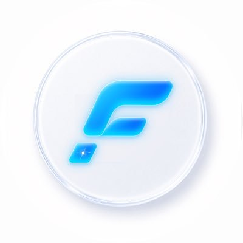

FinChip AI
AMBASSADORFinChip AI is building a modular framework for verifiable, on-chain AI skills — "skill chips" that let agents prove specific capabilities. As Ambassador, I represent the project across community and creator channels, translate technical skill-chip concepts into content people actually understand, and help onboard new believers into the ecosystem long before the mainstream narrative catches up.